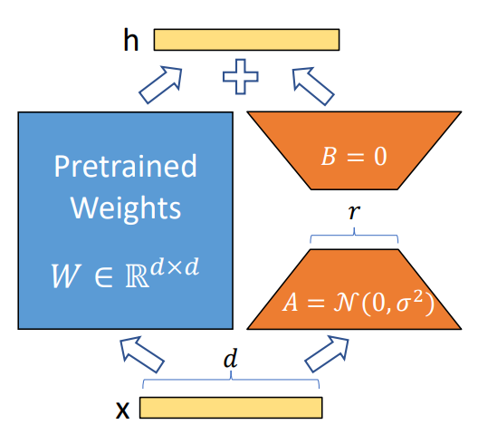
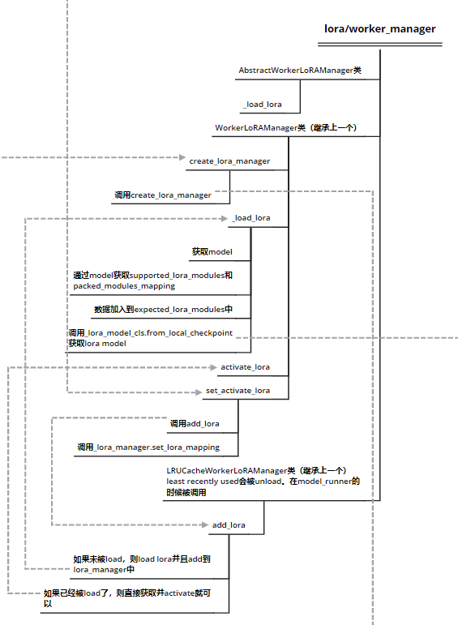
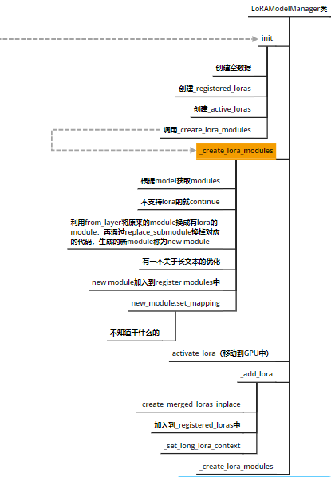

vLLM LoRA
基础知识
LoRA: Low-Rank Adaptation of Large Language Models
Low-Rank Adaptation, or LoRA, which freezes the pretrained model weights and injects trainable rank decomposition matrices into each layer of the Transformer architecture, greatly reducing the number of trainable parameters for downstream tasks, introducing no inference latency compared to a fully fine-tuned model, by construction.

可以理解为：
- 对于一个普通的隐藏层（hidden layer），$W$代表该hidden layer的权重，$x$是输入，$h$是出，其计算公式为：$h=Wx$
- 对于一个lora的hidden layer，$W_0$为初始权重，$\Delta W$是lora训练生成的矩阵，其计算公式为：$h=W_0 x+\Delta Wx=W_0 x+BAx$
- 我们希望$\Delta W$参数量远小于$W_0$，就使用了BA这两个矩阵来实现低秩投影（Low Rank Projection）。
LLM-Adapters: An Adapter Family for Parameter-Efficient Fine-Tuning of Large Language Models
相比于替换attention类，一个有效、通用的LoRA方法是实现nn.Linear的包装器，只检查对应的名字，进行直接替换。vLLM也是采用这种形式。
vLLM
llama支持lora，vLLM中opt不支持lora。
EmgineArgs
- Arguments
- enable_lora
- max_loras：在同一批次中可使用的lora数量
- max_lora_rank：可支持的最大秩，我理解是用于AB之中。
- fully_sharded_loras
- lora_extra_vocab_size
- long_lora_scaling_factors
- lora_dtype
- max_cpu_loras： cpu上lora cache空间
- qlora_adapter_name_or_path
这部分采用人工智能咨询
max_lora_rank: 用于设置 LoRA 层的最大秩。这个参数控制 LoRA 层的复杂度和容量。较低的秩可能会导致模型性能下降,而较高的秩可能会导致模型过拟合。max_loras: 用于设置可以使用的 LoRA 层的最大数量。这个参数控制 LoRA 层的数量,从而控制模型的复杂度。fully_sharded_loras: 一个布尔值,用于指示是否使用完全分片的 LoRA 层。完全分片可以提高内存效率,但可能会影响性能。max_cpu_loras: 一个可选的整数参数,用于设置在 CPU 上使用的 LoRA 层的最大数量。这个参数可以用于优化 CPU 性能。lora_dtype: 一个可选的 PyTorch 数据类型参数,用于设置 LoRA 层的数据类型。这个参数可以用于优化内存使用和性能。lora_extra_vocab_size: 用于设置 LoRA 层的额外词汇表大小。这个参数可以用于处理特殊的词汇需求。lora_vocab_padding_size: 一个类级别的常量参数,用于设置 LoRA 层的词汇表填充大小。这个参数通常不需要修改。long_lora_scaling_factors: 一个可选的元组参数,用于设置长序列任务的 LoRA 层缩放因子。这个参数可以用于优化长序列任务的性能。
- 在LoRA Config中会触发相关的model和scheduler检查
- 对lora_dtype的检查，对使用量化的检查
- 对max_num_batched_tokens的检查，不能大于65528
llm_emgine
这里把lora_config的信息传入executor和scheduler
Scheduler
curr_loras
- Currently batched lora request ids. The argument is in-place updated when any decodes are preempted.
- 近似于running_queue，服务于lora，存的是seq_group的lora_id。
在调度过程中通过保证lora的大小不大于max_loras，就不会触及关于lora的preempts。
- 在调度过程中实时地保证curr_loras的req和running_queue一样。要添加的时候检查在不在，不在就加进去；要删除的时候检查在不在，在就删除。
- prefill阶段
- 加入lora的数量超过max_loras了，这个请求就不会进入prefill
- swapped阶段
- 加入lora的数量超过max_loras了，这个请求就不会进入swapped in
model_runner
- lora_manager
- 这里先通过init限定了数据类型为LRUCacheWorkerLoRAManager
- 然后再load_model()，检查是否支持lora，支持就传入lora_manager，进行初始化，但这里并没有真生成lora manager
- 再使用lora_manager.create_lora_manager设置model对应的lora_manager
至此，我们就进入LoRA文件夹，有关LoRA的细节会在这里展开。
LoRA中我们需要重点注意两个机制：
- LoRA的初始化，导入了LoRA权重，修改了线形层代码
- LoRA的激活，主要是把LoRA相关的代码放入GPU中，为下一步推理激活LoRA线形层
- LoRA的计算
LoRA的初始化
lora/worker_manager

- 初始化部分
- create_lora_manager其实是继续调用了lora/models.py中的create_lora_manager函数，该函数主要负责
Create a LoRA adapter for a given model。调用该函数后，会直接触发新建一个LoRAModelManager类变量，这里就涉及到了LoRA的初始化部分。
- create_lora_manager其实是继续调用了lora/models.py中的create_lora_manager函数，该函数主要负责
lora/model.py

在这里通过对LoRAModelManager类的初始化，我们实现了把对应的modules换成LoRA的modules。
具体的更换机制如下，其中module是旧的module：
def _create_lora_modules(self):
for module_name, module in self.model.named_modules(
remove_duplicate=False):
if not self._match_target_modules(module_name):
continue
parts = module_name.split(".")[-1]
packed_moduled_lst = self.packed_modules_mapping.get(parts, [])
new_module = replace_submodule(
self.model, module_name,
from_layer(module, self.lora_slots, self.lora_config,
packed_moduled_lst, self.model.config))
# LinearScalingRotaryEmbeddingWithLora is used to handle
# long context lora. Register relevant metadata.
if isinstance(new_module, LinearScalingRotaryEmbeddingWithLora):
self.long_lora_context = LongContextLoRAContext(
new_module.scaling_factors, new_module.rotary_dim)
self.scaling_factor_to_offset = \
new_module.scaling_factor_to_offset
# (yard1): TODO make this more robust
if "lm_head" in module_name:
logits_processor_module = self.model.get_submodule(
"logits_processor")
new_module = replace_submodule(
self.model, "logits_processor",
from_layer_logits_processor(logits_processor_module,
module, self.lora_slots,
self.lora_config,
self.model.config))
self.register_module(module_name, new_module)
self._register_packed_modules(module_name)
new_module.set_mapping(self.base_indices, self.sampler_indices,
self.sampler_indices_padded,
self.embeddings_indices,
self.long_lora_indices, self.indices_len)
其中
在这里最后设置了Mapping部分，将后续推理过程中的各个变量初始化
replace_submodule函数如下，功能为利用新的module替换了model中对应的旧module。
def replace_submodule(model: nn.Module, module_name: str,
new_module: nn.Module) -> nn.Module:
"""Replace a submodule in a model with a new module."""
parent = model.get_submodule(".".join(module_name.split(".")[:-1]))
target_name = module_name.split(".")[-1]
setattr(parent, target_name, new_module)
return new_module
from_layer的机制
# lora/util.py
def from_layer(layer: nn.Module,
max_loras: int,
lora_config: LoRAConfig,
packed_modules_list: List,
model_config: Optional[PretrainedConfig] = None) -> nn.Module:
for lora_cls in _all_lora_classes: #_all_lora_classes类是所有的LoRA线形层函数
# specifying kwargs so they can be easily accessed in decorator
if lora_cls.can_replace_layer(source_layer=layer,
lora_config=lora_config,
packed_modules_list=packed_modules_list,
model_config=model_config):
ret = lora_cls(layer)
ret.create_lora_weights(max_loras, lora_config, model_config)
return ret
return layer
举个例子，lora_cls可以是RowParallelLinearWithLoRA，我们使用这个层来替换RowParallelLinear。
# RowParallelLinearWithLoRA类
@classmethod
@_not_fully_sharded_can_replace
def can_replace_layer(cls, source_layer: nn.Module,
lora_config: LoRAConfig, packed_modules_list: List,
model_config: Optional[PretrainedConfig]) -> bool:
return type(source_layer) is RowParallelLinear
这个函数就是判断是不是RowParallelLinear。
假如是，就初始化生成变量ret。
# RowParallelLinearWithLoRA类
def __init__(self, base_layer: RowParallelLinear) -> None:
super().__init__()
self.base_layer = base_layer
self.input_size = self.base_layer.input_size_per_partition
self.output_size = self.base_layer.output_size
self.device = _get_lora_device(self.base_layer)
然后再赋值对应的lora细节，比如AB矩阵
# RowParallelLinearWithLoRA类
def create_lora_weights(
self,
max_loras: int,
lora_config: LoRAConfig,
model_config: Optional[PretrainedConfig] = None) -> None:
self.lora_config = lora_config
self.tp_rank = get_tensor_model_parallel_rank()
self.lora_a_stacked = torch.zeros(
(
max_loras,
1,
lora_config.max_lora_rank,
self.input_size,
),
dtype=lora_config.lora_dtype,
device=self.device,
)
tp_size = get_tensor_model_parallel_world_size()
lora_b_output_size_per_partition = (
self.output_size if not lora_config.fully_sharded_loras else
divide(self.output_size, tp_size))
self.lora_b_stacked = torch.zeros(
(
max_loras,
1,
lora_b_output_size_per_partition,
lora_config.max_lora_rank,
),
dtype=lora_config.lora_dtype,
device=self.device,
)
# Lazily initialized
self.indices: torch.Tensor
self.indices_len: List[int]
至此，关于LoRA初始化的细节就完成了。
LoRA的激活
model_runner.py
在model_runner中的execute函数中，出现了有关LoRA激活部分的细节，在运行推理前会先对于LoRA进行激活
# model_runner类
def execute_model(...)
...
if self.lora_config:
self.set_active_loras(lora_requests, lora_mapping)
...
def set_active_loras(self, lora_requests: Set[LoRARequest],
lora_mapping: LoRAMapping) -> None:
if not self.lora_manager:
raise RuntimeError("LoRA is not enabled.")
self.lora_manager.set_active_loras(lora_requests, lora_mapping)
其调用了lora_manager来激活loras
worker_manager.py
# WorkerLoRAManager类
def set_active_loras(self, lora_requests: Set[LoRARequest],
lora_mapping: LoRAMapping) -> None:
self._apply_loras(lora_requests)
self._lora_manager.set_lora_mapping(lora_mapping)
Apply LoRA部分
注意，这里apply lora后，并不是调用同一个类的_apply_loras，而是调用其子类LRUCacheWorkerLoRAManager的__apply_loras。这里的机制是将所有lora request都add到gpu中。
# LRUCacheWorkerLoRAManager
def _apply_loras(self, lora_requests: Set[LoRARequest]) -> None:
loras_map = {
lora_request.lora_int_id: lora_request
for lora_request in lora_requests if lora_request
}
if len(loras_map) > self._lora_manager.lora_slots:
raise RuntimeError(
f"Number of requested LoRAs ({len(loras_map)}) is greater "
"than the number of GPU LoRA slots "
f"({self._lora_manager.lora_slots}).")
for lora in loras_map.values():
self.add_lora(lora)
首先 applay lora就是把根据lora request，计算处要add的lora模块和remove的lora模块。
其中，对于要add的lora模块，依次进行load，add和activate，其中会先load到cpu上，然后再将其add到cpu cache上，最后通过activate将其放到gpu上。
# LRUCacheWorkerLoRAManager
def add_lora(self, lora_request: LoRARequest) -> bool:
if lora_request.lora_int_id not in self.list_loras():
# Remove before we load the new lora to save memory
if len(self._lora_manager) + 1 > self._lora_manager.capacity:
assert isinstance(self._lora_manager, LRUCacheLoRAModelManager)
self._lora_manager.remove_oldest_lora()
lora = self._load_lora(lora_request)
loaded = self._lora_manager.add_lora(lora)
else:
# If the lora is already loaded, just touch it to
# update its position in the caches
loaded = self._lora_manager.get_lora(
lora_request.lora_int_id) is not None
self._lora_manager.activate_lora(lora_request.lora_int_id)
return loaded
add_lora做的工作则是
判断是否被导入过CPU了
假如没有导入过
- 根据LRU的规则，假如空间不够，则移除LRU的那一个LoRA
- 调用_load_lora把LoRA model load到cpu上
- 利用_lora_manager的add_lora将其记录在__lora_manager中
假如导入过，则直接调用get_lora检查是否获取成功。
然后再用_lora_manager的activate_lora对其推到GPU上，并设置对应的LoRA weight
# WorkerLoRAManager类
def _load_lora(self, lora_request: LoRARequest) -> LoRAModel:
try:
model = self._lora_manager.model
supported_lora_modules = model.supported_lora_modules
packed_modules_mapping = model.packed_modules_mapping
expected_lora_modules = []
for module in supported_lora_modules:
if module in packed_modules_mapping:
expected_lora_modules.extend(
packed_modules_mapping[module])
else:
expected_lora_modules.append(module)
lora = self._lora_model_cls.from_local_checkpoint(
lora_request.lora_local_path,
expected_lora_modules,
max_position_embeddings=self.max_position_embeddings,
lora_model_id=lora_request.lora_int_id,
device="cpu",
dtype=self.lora_config.lora_dtype,
target_embedding_padding=self.vocab_size +
self.lora_config.lora_extra_vocab_size,
embedding_modules=self.embedding_modules,
embedding_padding_modules=self.embedding_padding_modules,
)
except Exception as e:
raise RuntimeError(
f"Loading lora {lora_request.lora_local_path} failed") from e
if lora.rank > self.lora_config.max_lora_rank:
raise ValueError(
f"LoRA rank {lora.rank} is greater than max_lora_rank "
f"{self.lora_config.max_lora_rank}.")
if lora.extra_vocab_size > self.lora_config.lora_extra_vocab_size:
raise ValueError(f"LoRA added vocab size {lora.extra_vocab_size} "
f"is greater than lora_extra_vocab_size "
f"{self.lora_config.lora_extra_vocab_size}.")
return lora
_load_lora的机制则是把LoRA参数从disk中存到CPU内存中，类型为LoRAModel，注意这里是一个完整的LoRA变量了！
lora/models.py
# LoRAModel类
@classmethod
def from_local_checkpoint(
cls,
lora_dir: str,
expected_lora_modules: List[str],
*,
max_position_embeddings: Optional[int] = None,
lora_model_id: Optional[int] = None,
device: str = "cuda",
dtype: Optional[torch.dtype] = None,
target_embedding_padding: Optional[int] = None,
embedding_modules: Optional[Dict[str, str]] = None,
embedding_padding_modules: Optional[List[str]] = None,
) -> "LoRAModel":
"""Create a LoRAModel from a local checkpoint.
Args:
lora_dir: The local path that has lora data.
expected_lora_modules: Name of modules that are expected to be
replaced by lora.
max_position_embeddings: Max position embedding length. Used to
scaling the largest context length. If None, the lora model's
context length is not scaled.
lora_model_id: Lora model id. If not given, automatically set by
a global counter.
device: Device where the lora model is loaded.
dtype: dtype of the lora model weights.
Returns:
Loaded LoRA Model.
"""
# 将LoRA加载到CPU上！
def add_lora(self, lora: LoRAModel) -> bool:
"""Add a LoRAModel to the manager CPU cache."""
logger.debug(
"Adding lora. Model id: %d, "
"int id: %d, "
"scaling factor: %s", lora.id, lora.id, lora.scaling_factor)
if lora.id not in self._registered_loras:
if len(self._registered_loras) >= self.capacity:
raise RuntimeError("No free LoRA slots.")
self._add_lora(lora)
return True
return False
# 把LoRA部署到GPU上
def activate_lora(
self,
lora_id: int,
) -> bool:
if lora_id not in self._active_loras and len(
self._active_loras) >= self.lora_slots:
self._active_loras.remove_oldest()
result = super().activate_lora(lora_id) """Move LoRA into a GPU buffer to be used in the forward pass."""
# We always touch to update the LRU cache order
self._active_loras.touch(lora_id)
return result
def activate_lora(
self,
lora_id: int,
) -> bool:
"""Move LoRA into a GPU buffer to be used in the forward pass."""
if lora_id in self._active_loras:
return False
first_free_slot = next(
((i, lora_id) for i, lora_id in enumerate(self.lora_index_to_id)
if lora_id is None), None)
if first_free_slot is None:
raise ValueError("No free lora slots")
index, _ = first_free_slot
self._active_loras[lora_id] = None
lora_model = self._registered_loras[lora_id]
logger.debug("Activating LoRA. int id: %d, slot index: %d",
lora_model.id, index)
self.lora_index_to_id[index] = lora_model.id
for module_name, module in self.modules.items():
module_lora = lora_model.get_lora(module_name)
if module_lora:
module_lora.optimize()
module.set_lora(index, module_lora.lora_a, module_lora.lora_b,
module_lora.embeddings_tensor)
else:
module.reset_lora(index)
return True
将LoRA部署到GPU，set_lora和reset_lora就是把A、B权重放到module中
Set_LoRA_Mapping部分
# models.py
def set_lora_mapping(self, lora_mapping: LoRAMapping) -> None:
if self._last_mapping != lora_mapping:
self._set_lora_mapping(lora_mapping)
self._last_mapping = lora_mapping
def _set_lora_mapping(self, mapping: LoRAMapping) -> None:
(base_indices, sampler_indices, sampler_indices_padded,
embeddings_indices, long_lora_offsets_tensor,
indices_len) = convert_mapping(mapping, self.lora_index_to_id,
self.lora_slots + 1, self.vocab_size,
self.lora_config.lora_extra_vocab_size,
self.long_lora_context)
self.base_indices[:base_indices.shape[0]].copy_(base_indices)
self.sampler_indices[:sampler_indices.shape[0]].copy_(sampler_indices)
self.sampler_indices_padded[:sampler_indices_padded.shape[0]].copy_(
sampler_indices_padded)
self.embeddings_indices[:embeddings_indices.
shape[0], :embeddings_indices.shape[1]].copy_(
embeddings_indices)
if long_lora_offsets_tensor is not None:
self.long_lora_indices[:long_lora_offsets_tensor.shape[0]].copy_(
long_lora_offsets_tensor)
else:
self.long_lora_indices.zero_()
# Maintain the reference
self.indices_len[:] = indices_len
def convert_mapping(
mapping: LoRAMapping,
lora_index_to_id: List[Optional[int]],
max_loras: int,
vocab_size: int,
extra_vocab_size: int,
long_lora_context: Optional[LongContextLoRAContext] = None,
) -> Tuple[torch.Tensor, torch.Tensor, torch.Tensor, torch.Tensor,
Optional[torch.Tensor], List[int]]:
"""Converts LoRAMapping to index tensors.
Args:
mapping: LoRAMapping mapping rows in a batch to LoRA ids.
lora_index_to_id: List mapping LoRA ids to LoRA indices.
max_loras: Maximum number of LoRAs.
vocab_size: Model vocab size.
extra_vocab_size: Extra vocab size each LoRA can have.
long_lora_context: Passed if there are long context lora in a batch.
Returns:
A tuple of tensors:
base_indices: Tensor of shape [batch_size] mapping batch rows to
LoRA indices.
sampler_indices: Tensor of shape [batch_size] mapping requests to
LoRA indices for sampler. For generation, this will be the
same as base_indicies. For prefill, this will map requests
to LoRA indices.
sampler_indices_padded: Tensor of shape [batch_size] mapping
requests to LoRA indices for sampler with padding.
Same as sampler_indicies, but -1 is replaced with
max_loras.
embeddings_indices: Tensor of shape [2, batch_size] mapping
requests to embedding indices. First row is for embeddings
added by the LoRAs, second row is for the LoRA.lora_a
embeddings.
long_lora_indices: Tensor of shape [batch_size] mapping
requests to RoPE offsets and rot dims for long LoRAs.
None if long context lora doesn't exist.
indices_len: List of lengths of the above tensors.
Used to index into each tensor. It contains length for
(base_indices, sampler_indices, sampler_indices_padded,
embeddings_indices, long_lora_indices). If long_lora doesn't
exist, it only contains first 4 entries.
"""
总结
总结出来，则是：
- model_runner调用set_active_loras
- WorkerLoRAManager调用self的_apply_loras
- LRUCacheWorkerLoRAManager先确定对应的是否在CPU cache上了
- 再将LoRA weight从CPU上activate，即存在GPU中，并更新LoRA的最后activate时间，以备LRU使用。
- WorkerLoRAManager调用_lora_manager的set_lora_mapping
- 这一步把lora推理过程中的lora索引准备好了
- WorkerLoRAManager调用self的_apply_loras
LoRA的推理过程
在llama函数中，主要涉及的逻辑是修改词汇大小，添加lora词汇。
在layers层中，需要是修改计算逻辑。
比如，在RowParallelLinearWithLoRA将apply的逻辑修改为_apply_lora，再往下则使用Punica库进行实现。
# RowParallelLinearWithLoRA类
def forward(self, input_):
"""Forward of RowParallelLinear
Args:
input_: tensor whose last dimension is `input_size`. If
`input_is_parallel` is set, then the last dimension
is `input_size // tp_size`.
Returns:
- output
- bias
"""
# Set up backprop all-reduce.
if self.base_layer.input_is_parallel:
input_parallel = input_
else:
# TODO: simplify code below
tp_rank = get_tensor_model_parallel_rank()
splitted_input = split_tensor_along_last_dim(
input_, num_partitions=self.base_layer.tp_size)
input_parallel = splitted_input[tp_rank].contiguous()
# Matrix multiply.
output_parallel = self.apply(input_parallel)
if self.base_layer.reduce_results and self.base_layer.tp_size > 1:
output_ = tensor_model_parallel_all_reduce(output_parallel)
else:
output_ = output_parallel
if not self.base_layer.skip_bias_add:
output = (output_ + self.base_layer.bias
if self.base_layer.bias is not None else output_)
output_bias = None
else:
output = output_
output_bias = self.base_layer.bias
return output, output_bias
def apply(self, x: torch.Tensor) -> torch.Tensor:
output = self.base_layer.quant_method.apply(self.base_layer, x)
_apply_lora( #
x,
self.lora_a_stacked,
self.lora_b_stacked,
self.indices[:self.indices_len[0]],
output,
)
return output
目前观测结果是：所有都使用了LoRA层
to be confirmed
- LoRA Mapping是处理推理部分的映射的？
- 那这种set_lora的方法不应该会覆盖？
scheduler是否有将LoRA和非LoRA的一起计算？
s-lora